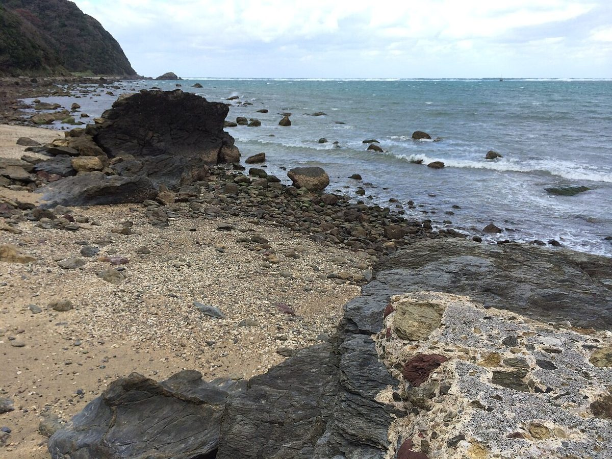
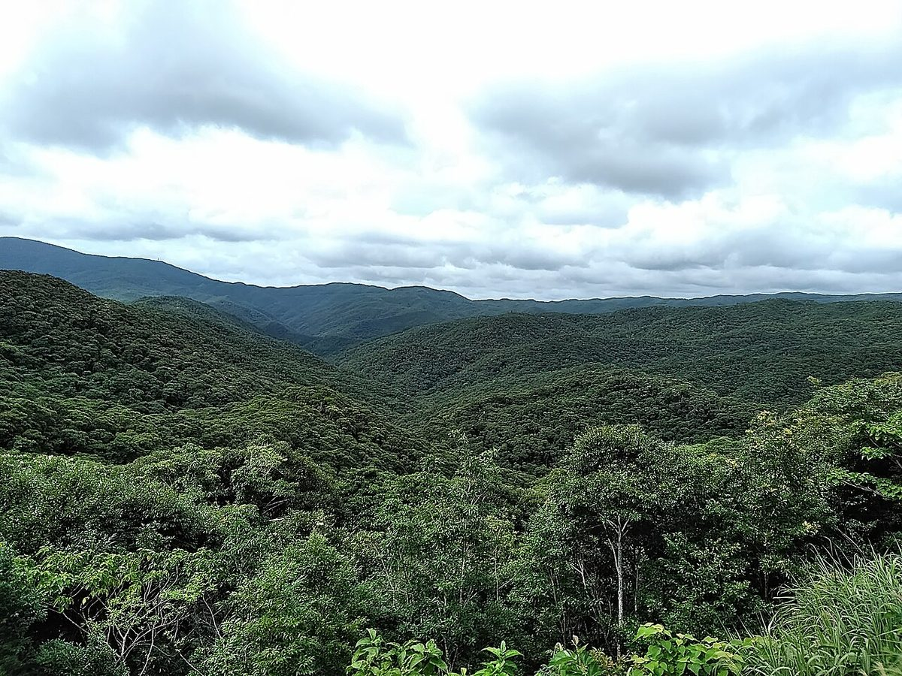
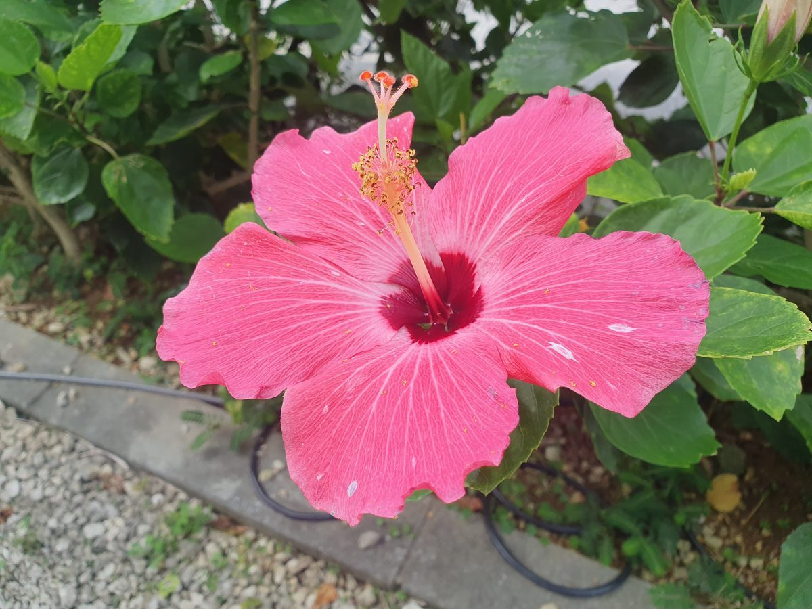

試作サンプル|実在のお店への提案として制作した見本ページです
掲載写真はフリー素材のイメージです。店舗・商品の実際の写真ではありません(他地域・海外・撮影地不明のものを含みます)。
お店について
- 店名
- AMAMI pâtisserie MOTONO
- 業種
- パティスリー
- 所在地
- 鹿児島県奄美市名瀬長浜町4-14
- @amami__patisserie_m
- 営業時間・定休日
- 準備中(お問い合わせください)
- スタッフ
- 準備中(お問い合わせください)
- お店の特徴・方針
- 準備中(お問い合わせください)
- 店名の由来
- 準備中(お問い合わせください)



イメージ写真(奄美の風景は他地域・撮影地不明を含む場合があります)
このサイトについて
掲載内容は制作側の案(試作)です。店の理念や店名の由来は、お店からの情報をいただいてから反映します。
制作側のコンセプト案: 夕方の島の色で、はじめての人にも場所がすぐ分かる案内ページ。
このコンセプトは制作側の案です。店名の意味やお店の理念を示すものではありません。